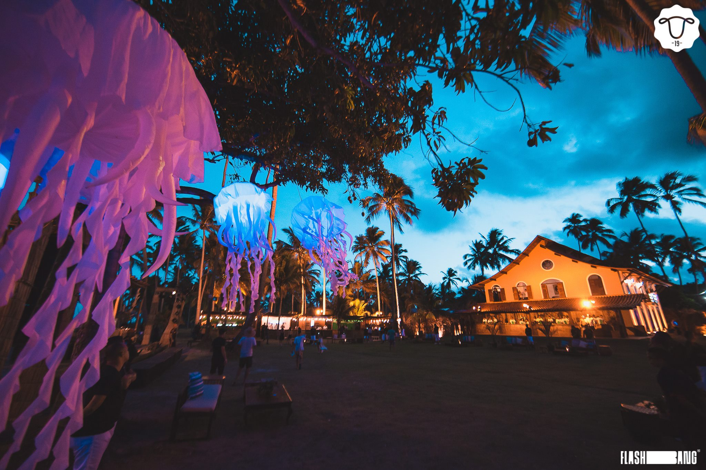

Réveillon Carneiros convida você para tornar o #BrazilianDream realidade🐏🇧🇷🤍
Eventos
All Inclusive: Nossos eventos noturnos. Festas temáticas que mudam completamente de atmosfera (cenografia, palco e estrutura) a cada dia.
Começam à noite e continuam até o amanhecer - ALL INCLUSIVE: Full open bar + Open food (buffet Arcádia) Mouton Beach Club (não contemplado no pacote all inclusive): é o Beach Club de Carneiros.
As festas acontecem no final da tarde e vão até a noite (o bar e a comida são vendidos à parte, no evento)
Praia dos Carneiros:Aeroporto mais próximo: REC - Aeroporto Internacional do Recife (Recife, Pernambuco, BRASIL)
Na chegada:
A Praia de Carneiros fica a 90km do aeroporto de Recife, o trajeto pode ser feito de táxi, transfer ou carro e dura aproximadamente 1 hora.*Evento destinado a maiores de 18 anos.
*Pacote Full Pass All Inclusive (5 ou 6 Festas) não inclui acesso aos eventos do Mouton Beach Club.
Voos e Hospedagem :
Com atendimento personalizado, você pode montar a sua viagem, ou do seu grupo.Ingressos:
Ingressos válidos por todo o período (27 a 02/01) para as festas noturnas.Os ingressos para o Mouton Beach Clubs não estão inclusos.
Os ingressos são nominais e intransferíveis.
Adquira o seu ingressoPara mais informações acesse:
Ou acesse o Instagram: @reveillon.carneiros ou SAC: +55(11)93361-6168